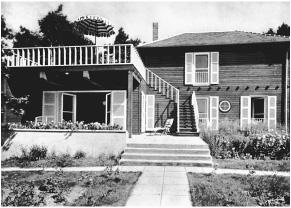

Einstein’s house in Caputh near Berlin
爱因斯坦在柏林近邻卡普特的住宅
Caputh 卡普特
Einstein wanted some solitude for his fiftieth birthday, a refuge from publicity. So in March 1929 he fled once again, as he had during the publication of his unified field theory paper of a few months earlier, to the gardener’s cottage of an estate on the Havel River owned by Janos Plesch, a flamboyant and gossipy Hungarian-born celebrity doctor who had added Einstein to his showcase collection of patient-friends.
爱因斯坦希望避开媒体，平静地度过50岁生日。1929年3月，就像几个月前酝酿他的统一场论论文那样，他又一次躲进了哈维尔河畔一处庄园的花园别墅。庄园的主人是匈牙利裔医生亚诺什·普莱什。他追求浮华，爱传小道消息，曾给爱因斯坦治过病。
For days he lived by himself, cooking his own meals, while journalists and official well-wishers searched for him. His whereabouts became a matter of newspaper speculation. Only his family and assistant knew where he was, and they refused to tell even close friends.
一连数日，爱因斯坦独自生活，亲自下厨。众多新闻记者和官方人士苦苦寻觅他，希望对此进行报道或表达良好祝愿。报纸媒体纷纷猜测其行踪。只有他的家人和助手知道他在哪里，他们甚至连亲近的朋友都不透露。
Early on the morning of his birthday, he walked from this hide-away, which had no phone, to a nearby house to call Elsa. She started to wish him well on reaching the half-century mark, but he interrupted. “Such a fuss about a birthday,” he laughed. He was phoning about a matter involving physics, not the merely personal. He had made a small mistake in some calculations he had given to his assistant Walther Mayer, he told her, and he wanted her to take down the corrections and pass them along.
生日那天一早，由于住处没有安电话，爱因斯坦来到附近的—个房子打电话给爱尔莎。爱尔莎对他的50岁生日致以良好祝愿，但被爱因斯坦打住。“过个生日也那么麻烦。”他笑道。他打电话是为了一件物理学的事情，而不是他个人。他告诉爱尔莎，助手瓦尔特·迈尔的计算中犯了一个小错误，希望她能记下更正，转告他人。
Elsa and her daughters came out that afternoon for a small, private celebration. She was dismayed to find him in his oldest suit, which she had hidden. “How did you manage to find it?” she asked.
那天下午，爱尔莎和女儿出席了一场小型的私人庆祝活动。她惊讶地发现，爱因斯坦穿着她藏起来的旧衣服。“你怎么找到它的？”她问道。
“Ah,” he replied, “I know all about those hiding places.”1
“哈，”他回答，那些隐藏之处我都清楚。”
The New York Times, as intrepid as ever, was the only paper that managed to track him down. A family member later recalled that Einstein’s angry look drove the reporter away. That was not true. The reporter was smart and Einstein, despite his feigned fury, was as accommodating as usual. “Einstein Is Found Hiding on His Birthday” was the paper’s headline. He showed the reporter a microscope he had been given as a gift, and the paper reported that he was like a “delighted boy” with a new toy.2
一贯坚軔不拔的《纽约时报》是唯一一家找到爱因斯坦的报纸。一位家庭成员后来回忆说，爱因斯坦异常愤怒，把记者吓跑了。事实并非如此。那名记者非常机敏，爱因斯坦尽管佯作愤怒，也和平时一样随和。“爱因斯坦生日那天躲起来了。”报纸大标题写道。他给记者看他获赠的一架望远镜，《纽约时报》报道说，他就像一个“快乐的男孩子”摆弄着一个新玩具。
From around the world came other gifts and greetings. The ones that moved him the most were from ordinary people. A seamstress had sent him a poem, and an unemployed man had saved a few coins to get him a small packet of tobacco. The latter gift brought tears to his eyes and was the first for which he wrote a thank-you letter.3
各种礼物和祝福从世界各地纷至沓来。最令他感动的是普通人寄来的礼物。一个女裁缝寄给他一首诗，一个失业的男人用自己积攒的硬币给他买了一小袋烟草。爱因斯坦深受感动。第一个收到他致谢回信的就是这个失业工人。
Another birthday gift caused more problems. The city of Berlin, at the suggestion of the ever-meddling Dr. Plesch, decided to honor its most famous citizen by giving him lifelong rights to live in a country house that was part of a large lakeside estate that the city had acquired. There he would be able to escape, sail his wooden boat, and scribble his equations in serenity.
另一份生日礼物引出了更多问题。在好事的医生普莱什的建议下，柏林市决定赠予这位最著名的市民一间乡间邸宅的永久居住权，它是一座巨大的湖畔庄园的一部分。爱因斯坦可以在那里隐居，扬帆起航，不受干扰地涂写他的方程式。
It was a generous and gracious gesture. It was also a welcome one. Einstein loved sailing and solitude and simplicity, but he owned no weekend retreat and had to store his sailboat with friends. He was thrilled to accept.
这种慷慨而热诚的姿态使爱因斯坦满心欢喜。他喜欢驾驶帆船，喜爱孤独和简单，但他周末没有隐居之所，只能和朋友们一起驾驶帆船。于是他激动地接受了这份礼物。
The house, in a classical style, was nestled in a park near the village of Cladow on a lake of the Havel River. Pictures of it appeared in the papers, and a relative called it “the ideal residence for a person of creative intellect and a man fond of sailing.” But when Elsa went to inspect it, she found still living there the aristocratic couple who sold the estate to the city. They claimed that they had retained the right to live on the property. A study of the documents proved them right, and they could not be evicted.
这座古典风格的住宅坐落在哈维尔河克拉多（Cladow）村附近的庄园里。报纸上登出了它的照片，一个亲戚称它为“富于创造性和喜欢航行的人的理想居所”。但爱尔莎发现，曾经将地产卖给了市里的贵族夫妇，现在他们仍然住在那里。他们声称自己仍然有权继续使用这份地产。通过核对文件，表明事实的确如此，他们不能被赶出去。
So the city decided to give the Einsteins another part of the estate on which they could build their own home. But that, too, violated the city’s purchase agreement. Pressure and publicity only hardened the resolve of the original family to block the Einsteins from building on the land, and it became an embarrassing front-page fiasco, especially after a third suggested alternative also proved unsuitable.
于是柏林市政府决定把这座庄园的另外一个地方交给爱因斯坦一家，他们可以在那里建造房屋。但这也违反了市里的购买协议。压力和知名度并没有使原住户屈服，反倒使他们更加坚定地阻止爱因斯坦一家在那里造房。后来，第三种建议也没有被接受，这场惨败轰动一时，着实令人尴尬。
Finally it was decided that the Einsteins should simply find their own piece of land, and the city would buy it. So Einstein picked out a parcel, owned by some friends, farther out of town near a village just south of Potsdam called Caputh. It was in a sylvan spot between the Havel and a dense forest, and Einstein loved it. The mayor accordingly asked the assembly of city deputies to approve spending 20,000 marks to buy the property as the fiftieth birthday gift to Einstein.
最后的方案是，爱因斯坦一家可以自行选择地方，由市里出钱购买。于是爱因斯坦挑选了归朋友所有的一小块土地，它位于波茨坦南部的卡普特村附近，离市区更远。那里林木茂盛，位于哈维尔河和一片茂密的森林之间，爱因斯坦很喜欢。于是市长要市议会批准拨款两万马克买下这份地产，作为爱因斯坦50岁的生日礼物。
A young architect drew up plans, and Einstein bought a small garden plot nearby. Then politics intervened. In the assembly, the right-wing German Nationalists objected, delayed the vote, and insisted that the proposal be put on a future agenda for a full debate. It became clear that Einstein personally would become the focus of that debate.
一个年轻的建筑师草拟了设计图，爱因斯坦买了附近的一个小花园。接着政治卷了进来。在议会中，右翼的德国民族主义者表示反对。他们推迟了投票，坚持以后再对这项议案做充分讨论。显然，爱因斯坦本人将成为争论的焦点。
So he wrote a letter, tinged with amusement, declining the gift. “Life is very short,” he told the mayor, “while the authorities work slowly. My birthday is already past, and I decline the gift.” The headline the next day in the Berliner Tageblatt newspaper read, “Public Disgrace Complete / Einstein Declines.”4
于是爱因斯坦以幽默的笔调写了一封信，谢绝了这份礼物。“生命很短暂，”他对市长说，“政府拖的时间太长了。我的生日已过，不能再领受这份礼物。”第二天《柏林日报》的大标题写道：共和党丢尽了脸——爱因斯坦拒绝这份礼物。
By this point, the Einsteins had fallen in love with the plot of land in Caputh, negotiated its purchase, and had a design for a house to build upon it. So they went ahead and bought it with their own money. “We have spent most of our savings,” Elsa complained, “but we have our land.”
这时，爱因斯坦一家已经喜欢上了卡普特的那块地。他们用自己的钱买下了它，并绘出了建房图纸。“我们花掉了大部分积蓄，”爱尔莎抱怨说，“但有了自己的地方。”
The house they built was simple, with polished wood panels inside and unvarnished planks showing to the outside. Through a large picture window was a serene view of the Havel. Marcel Breuer, the famed Bauhaus furniture designer, had offered to do the interior design, but Einstein was a man of conservative tastes. “I am not going to sit on furniture that continually reminds me of a machine shop or a hospital operating room,” he said. Some leftover heavy pieces from the Berlin apartment were used instead.
房子造得很简洁，内部是光洁的镶板，外部则是未上清漆的原木。透过一扇大落地窗，可以欣赏哈维尔河的宁静景色。著名的包豪斯家具设计师马塞尔·布劳耶曾经表示愿意做室内设计，但爱因斯坦趣味保守。“我不愿住在这些家具中间，它们会使我想起机器车间或医院手术室。”他说。最后还是用了柏林公寓里剩下的一些笨重的旧式家具。
Einstein’s room on the ground floor had a spartan wooden table, a bed, and a small portrait of Isaac Newton. Elsa’s room was also downstairs, with a shared bathroom between them. Upstairs were small rooms with sleeping niches for her two daughters and their maid. “I like living in the new little wooden house enormously, even though I am broke as a result,” he wrote his sister shortly after moving in. “The sailboat, the sweeping view, the solitary fall walks, the relative quiet—it is a paradise.”5
爱因斯坦在底层的房间里有一张简洁的木桌、一张床和一幅不大的牛顿肖像。爱尔莎的房间也在楼下，两个屋子之间是一个公用的盥洗室。楼上的小房间是她两个女儿以及女仆的卧室。“我非常喜欢住在这个新的小木屋里，虽然这所房子几乎使我破产，”他住进去不久给妹妹写信说，“每天可以进行帆船运动，欣赏风景，秋日独自漫步；这里静谧非常，真是一个天堂。”
There he sailed the new twenty-three-foot boat his friends had given him for his birthday, the Tümmler, or Dolphin, which was built fat and solid to his specifications. He liked to go out on the water alone, even though he didn’t swim. “He was absurdly happy as soon as he reached the water,” recalled a visitor.6 For hours he would let the boat drift and glide aimlessly as he gently toyed with the rudder. “His scientific thinking, which never leaves him even on the water, takes on the nature of a daydream,” according to one relative. “Theoretical thinking is rich in imagination.”7
在这里，他经常驾驶一条23英尺的崭新的“海豚号”（TÜmmler）帆船，这是朋友们送给他的生日礼物。按照他提出的规格和愿望，小船特意造得宽敞而坚固。他并不下水游泳，而是喜欢独自泛舟游弋。“他一到水上就感到无比幸福。”一位访客回忆说。 他喜欢轻轻掌着舵，让船缓缓地顺水漂流。“他的科学思考总是表现出一种幻想的性质，即使在行船时也没有停止，”一位亲戚说，“理论思考是富于想象的。”
Companions 伴侣
Throughout Einstein’s life, his relationships with women seemed subject to untamed forces. His magnetic appeal and soulful manner repeatedly attracted women. And even though he usually shielded himself from entangling commitments, he occasionally found himself caught in the swirl of a passionate attraction, just as he had been with Mileva Mari and even Elsa.
and even Elsa.
爱因斯坦似乎终生都无法摆脱与女性的暧昧关系。他的磁性魅力和真诚举止不断吸引着女性。即使他通常避免做出纠缠不清的承诺，但偶尔也会因受到吸引而不能自拔，就像他曾经与米列娃甚至爱尔莎那样。
In 1923, after marrying Elsa, he had fallen in love with his secretary, Betty Neumann. Their romance was serious and passionate, according to newly revealed letters. That fall, while on a visit to Leiden, he wrote to suggest that he might take a job in New York, and she could come as his secretary. She would live there with him and Elsa, he fantasized. “I will convince my wife to allow this,” he said. “We could live together forever. We could get a large house outside New York.”
1923年，在与爱尔莎结婚之后，他爱上了秘书贝蒂·诺依曼。根据新近披露的信件，他们的风流韵事既一本正经，又充满激情。在那年秋天访问莱顿期间，他写信暗示自己可能会在纽约任职，她可以来做他的秘书。爱因斯坦幻想贝蒂可以在那里同他和爱尔莎一起生活。“我会说服我的妻子答应这件事，”他说，“我们可以永远生活在一起。我们可以在纽约之外弄一套大房子。”
She replied by ridiculing both him and the idea, which prompted him to concede how much of a “crazy ass” he had been. “You have more respect for the difficulties of triangular geometry than I, old mathematicus, have.”8
贝蒂在回信中取笑了他和这种想法，这促使他承认自己是一头多么“疯狂的驴子”。“你比我这个老数学家更懂得三角几何学的困难。”
He finally terminated their romance with the lament that he “must seek in the stars” the true love that was denied to him on earth. “Dear Betty, laugh at me, the old donkey, and find somebody who is ten years younger than me and loves you just as much as I do.”9
最终，爱因斯坦结束了这段风流韵事，并悲叹道，他“必须在星空中寻找”地球上不能给予他的真爱。“亲爱的贝蒂，取笑我这头老驴吧，找一个比我年轻十岁、像我一样爱你的人。”
But the relationship lingered. The following summer, Einstein went to see his sons in southern Germany, and from there he wrote to his wife that he could not visit her and her daughters, who were at a resort nearby, because that would be “too much of a good thing.” At the same time, he was writing Betty Neumann saying that he was going secretly to Berlin, but she should not tell anyone because if Elsa found out she “will fly back.”10
但这种暧昧关系依然持续着。第二年夏天，爱因斯坦去德国南部看望他的儿子，在那里他给妻子写信说，他不能到附近的疗养胜地去看她和她的女儿了，因为“好事不宜做得太过头”。同时又给贝蒂·诺依曼写信说，他将偷偷去柏林，但她不能告诉任何人，因为如果爱尔莎知道了，她“肯定会翻脸”。
After he built the house in Caputh, a succession of women friends visited him there, with Elsa’s grudging acquiescence. Toni Mendel, a wealthy widow with an estate on the Wannsee, sometimes came sailing with him in Caputh, or he would pilot his boat up to her villa and stay late into the night playing the piano. They even went to the theater together in Berlin occasionally. Once when she picked Einstein up in her chauffeured limousine, Elsa got into a furious fight with him and would not give him any pocket money.
卡普特的住宅建好之后，有几位女性朋友相继来到这里拜访爱因斯坦，爱尔莎只得勉强默许。托尼·曼德尔是一位富有的寡妇，在万湖（Wannsee）拥有一座庄园。她有时会到卡普特与爱因斯坦一起驾驶帆船，有时爱因斯坦则会乘小艇到她的别墅，在那里弹钢琴到很晚。他们偶尔甚至会一起去柏林的剧院。有一次，曼德尔开豪华轿车来接爱因斯坦，爱尔莎与他大闹一场，不给他一分钱零花钱。
He also had a relationship with a Berlin socialite named Ethel Michanowski. She tagged along on one of his trips to Oxford, in May 1931, and apparently stayed in a local hotel. He composed a five-line poem for her one day on a Christ Church college notecard. “Long-branched and delicately strung, Nothing that will escape her gaze,” it began. A few days later she sent him an expensive present, which was not appreciated.“The small package really angered me,” he wrote.“You have to stop sending me presents incessantly ... And to send something like that to an English college where we are surrounded by senseless affluence anyway!”11
他还与柏林的一位社会名流埃塞尔·米沙诺夫斯基发生了一段风流韵事。1931年5月，米沙诺夫斯基尾随爱因斯坦到了牛津，据说住在当地的一家旅馆。一天，爱因斯坦在牛津基督教会学院的一张短柬卡上为她作了一首五行诗。“体态修长，窈窕安详，一切都逃不过她的目光……”诗句这样开始。几天后，米沙诺夫斯基寄来了一份贵重的礼物，但爱因斯坦并不高兴。“小包裹着实让我生气了，”他写道，“请不要再频繁给我寄礼物……还是把这样的东西寄给英国的学院吧，无论如何，我们周围充斥着毫无意义的财富！”
When Elsa found out that Michanowski had visited Einstein in Oxford, she was furious, particularly at Michanowski for misleading her about where she was going. Einstein wrote from Oxford to tell Elsa to calm down. “Your dismay toward Frau M is totally groundless because she behaved completely according to the best Jewish-Christian morality,” he said. “Here is the proof: 1) What one enjoys and doesn’t harm others, one should do. 2) What one doesn’t enjoy and only aggravates others, one should not do. Because of #1, she came with me, and because of #2 she didn’t tell you anything about it. Isn’t that impeccable behavior?” But in a letter to Elsa’s daughter Margot, Einstein claimed that Michanowski’s pursuit was unwanted. “Her chasing me is getting out of control,” he wrote Margot, who was Michanowski’s friend. “I don’t care what people are saying about me, but for mother [Elsa] and for Frau M, it is better that not every Tom, Dick and Harry gossip about it.”12
当爱尔莎发现米沙诺夫斯基到牛津找过爱因斯坦时暴跳如雷，特别是因为米沙诺夫斯基没有对她说实话。爱因斯坦在牛津写信给爱尔莎要她冷静。“你对M女士的不满毫无理由，因为她的行为完全符合最好的犹太-基督教道德，”他说，“证明如下：① 一个人应当做他喜欢且不伤害他人的事情。② 一个人不应当做他不喜欢且只会激怒他人的事情。因为第一条，她来找了我。因为第二条，她没有把这件事告诉你。这种行为难道不是无可指摘吗？”但在给爱尔莎的女儿玛戈特的一封信中，爱因斯坦称米沙诺夫斯基的追求是徒劳的。“她对我的追求正在变得不可收拾，”他给米沙诺夫斯基的朋友玛戈特写信说，“我不在乎别人怎么说我，但为了妈妈（爱尔莎）和M女士，最好不要让张三李四说闲话。”
In his letter to Margot, he insisted that he was not particularly attached to Michanowski nor to most of the other women who flirted with him. “Of all the women, I am actually attached only to Frau L, who is perfectly harmless and respectable,” he said, not so reassuringly.13 That was a reference to a blond Austrian named Margarete Lebach, with whom he had a very public relationship. When Lebach visited Caputh, she brought pastries for Elsa. But Elsa, understandably, could not abide her, and she took to leaving the village to go shopping in Berlin on the days that Lebach came.
在给玛戈特的信中，他坚称自己并不特别依恋米沙诺夫斯基以及其他与之调情的女人。“在所有的女人中，我实际上只对L女士依依不舍，她温柔可亲，品行端正。”他的话似乎并不那么让人放心。 这里指的是一位金发碧眼的奥地利女士，名叫玛格丽特·勒巴赫，爱因斯坦与她有过一段众所周知的风流韵事。勒巴赫来卡普特时，为爱尔莎带来了油酥点心。爱尔莎自然无法忍受她，只好早早地离开村子，到柏林去买东西。
On one visit, Lebach left a piece of clothing in Einstein’s sailboat, which caused a family row and prompted Elsa’s daughter to urge her to force Einstein to end the relationship. But Elsa was afraid that her husband would refuse. He had let it be known that he believed that men and women were not naturally monogamous.14 In the end, she decided that she was better off preserving what she could of their marriage. In other respects, it suited her aspirations.15
有一次，勒巴赫的一件衣服落在了爱因斯坦的帆船上，这酿成了一场家庭纠纷。爱尔莎的女儿因此敦促爱尔莎让爱因斯坦结束这段不正当的关系。但爱尔莎担心丈夫会拒绝。因为他曾经表示，一夫一妻并非男人和女人的天性。 所以最后，她还是觉得尽力维持他们的婚姻更明智，因为婚姻可以满足她在其他方面的渴望。
Elsa liked her husband, and she also revered him. She realized that she must accept him with all of his complexities, especially since her life as Mrs. Einstein included much that made her happy. “Such a genius should be irreproachable in every respect,” she told the artist and etcher Hermann Struck, who did Einstein’s portrait around the time of his fiftieth birthday (as he had done a decade earlier). “But nature does not behave this way. Where she gives extravagantly, she takes away extravagantly.”The good and the bad had to be accepted as a whole. “You have to see him all of one piece,” she explained. “God has given him so much nobility, and I find him wonderful, although life with him is exhausting and complicated, and not only in one way but in others.”16
爱尔莎爱她的丈夫，也敬重他。她意识到，必须完全接受他的复杂个性，特别是因为作为爱因斯坦夫人的生活给她带来了许多幸福。“这样一个天才应当在任何方面都无可指摘，”她对艺术家和蚀刻画家赫尔曼·施特鲁克（他在爱因斯坦50岁生日时为他画了肖像，就像10年前所做的那样）说，“但大自然并不是这样运作的。她在哪里毫不吝惜地给予，也在哪里慷慨大地拿走。”好处和坏处只能通盘接受。“你必须把他看成一个整体，”她解释说，“尽管同他生活令人疲惫，复杂难解，而且不只在一个方面，而是在许多方面，但上帝已经赋予他如此多的高贵品质，我觉得他很了不起。”
The most important other woman in Einstein’s life was one who was completely discreet, protective, loyal, and not threatening to Elsa. Helen Dukas came to work as Einstein’s secretary in 1928, when he was confined to bed with an inflamed heart. Elsa knew her sister, who ran the Jewish Orphans Organization, of which Elsa was honorary president. Elsa interviewed Dukas before allowing her to meet Einstein, and she felt that Dukas would be trustworthy and, more to the point, safe in all respects. She offered Dukas the job even before she had met Einstein.
在爱因斯坦生活中扮演最重要角色的另一个女人是杜卡斯。她言行谨慎，忠心耿耿，竭力保护爱因斯坦，而且对爱尔莎没有威胁。杜卡斯从1928年开始任爱因斯坦的秘书，那时他因心脏病卧病在床。爱尔莎认识杜卡斯的姐姐，即犹太孤儿组织的负责人，爱尔莎则任该组织的名誉主席。爱尔莎在允许杜卡斯见爱因斯坦之前先对她进行了面试，觉得她可以信赖，更重要的是，她在各方面都很让人放心。所以甚至在杜卡斯见到爱因斯坦之前，她就答应让杜卡斯工作了。
When Dukas, then 32, was ushered into Einstein’s sickroom in April 1928, he stretched out his hand and smiled, “Here lies an old child’s corpse.” From that moment until his death in 1955—indeed until her own death in 1982—the never-married Dukas was fiercely protective of his time, his privacy, his reputation, and later his legacy. “Her instincts were as infallible and straightforward as a magnetic compass,” George Dyson later declared. Although she could display a pleasant smile and lively directness with those she liked, she was generally austere, hard-boiled, and at times quite prickly.17
1928年4月，32岁的杜卡斯被领进爱因斯坦的病房，爱因斯坦伸出手，微笑着对她说：“这里躺着一具老顽童的尸体。”从那一刻起，直到爱因斯坦1955年去世（事实上是直到她本人1982年去世），终身未嫁的杜卡斯忠心耿耿地保护着他的时间、隐私、名誉和遗产。虽然她会对看着顺眼的人露出善意的微笑，显得充满生气，但她总体上说是严厉无情的，有时甚至会激怒别人。
More than a secretary, she could appear to intrusive outsiders as Einstein’s pit bull—or, as he referred to her, his Cerberus, the guard dog at the gates of his own little kingdom of Hades. She would keep journalists at bay, shield him from letters she thought a waste of his time, and cover up any matters that she decreed should remain private. After a while, she became like a member of the family.
在那些不速之客看来，杜卡斯不仅是一个秘书，更是爱因斯坦的斗牛狗（pitbull），或如爱因斯坦所说，是他的刻耳柏洛斯（Cerbems），即守卫冥府入口的看门狗。她会把新闻记者拒之门外，帮爱因斯坦过滤掉可能会浪费他时间的信，隐藏一切她认为应当保持私密的事情。没过多久，她已经像自家人一样了。
Another frequent visitor was a young mathematician from Vienna, Walther Mayer, who became an assistant and, in Einstein’s words, “the calculator.” Einstein collaborated with him on some unified field theory papers, and he called him “a splendid fellow who would have long had a professorship if he were not a Jew.”18
常常光顾爱因斯坦家的还有来自维也纳的年轻数学家瓦尔特·迈尔，他后来成了爱因斯坦的一位助手，用爱因斯坦的话说，是“计算器”。爱因斯坦与他合写了一些关于统一场论的论文，并称他“是极好的伙伴，如果不是犹太人，早就成教授了”。
Even Mileva Mari, who had gone back to using her maiden name after the divorce, started using the name Einstein again and was able to establish a strained but workable relationship with him. When he visited South America, he brought her back baskets of cactuses. Since she loved the plants, it was presumably meant as an amicable gift. On his visits to Zurich, he stayed at her apartment occasionally.
甚至离婚后使用少女名的米列娃，也开始重新使用“爱因斯坦”这个名字，并且与他建立了一种紧张但又过得去的关系。爱因斯坦访问南美时，给她带回了几篮仙人掌。由于米列娃喜欢植物，这件礼物也许意在显示友善。访问苏黎世时，爱因斯坦偶尔会待在她的寓所。
He even invited her to stay with him and Elsa when she came to Berlin, an arrangement that likely would have made every single person involved uncomfortable. But she wisely stayed with the Habers instead. Their relationship had improved so much, he told her, that he was now surprising his friends by recounting how well they were getting along. “Elsa is also happy that you and the boys are not hostile to her anymore,” he added.19
他甚至邀米列娃到柏林时，与他和爱尔莎同住，这一安排可能会让他们每个人都感觉不舒服。好在米列娃明智地住在了哈伯家。爱因斯坦对米列娃说，他们的关系已经改善了许多，当他向朋友们描述他们相处得很好时，朋友们都很惊讶。“爱尔莎也很高兴，你和儿子们不再敌视她了。”他补充说。
Their two sons, he told Mari, were the best part of his inner life, a legacy that would remain after the clock of his own body had worn down. Despite this, or because of it, his relationship with his sons remained fraught with tensions. This was particularly true when Hans Albert decided to get married.
他还说，两个儿子是他心中最宝贵的财富。在他的身体朽坏之后，这份遗产仍会保留下来。尽管如此，或者说正因如此，他与儿子们的关系仍然十分紧张，特别是当汉斯·阿尔伯特决定结婚时更是如此。
As if the gods wished to extract their revenge, the situation was similar to the one Einstein had put his own parents through when he decided to marry Mileva Mari. Hans Albert had fallen in love, while studying at the Zurich Polytechnic, with a woman nine years his senior named Frieda Knecht. Less than five feet tall, she was plain and had an abrupt manner but was very smart. Both Mari and Einstein, reunited by this cause, agreed that she was scheming, unattractive, and would likely produce physically unsuitable offspring. “I tried my best to convince him that marrying her would be crazy,” he wrote Mari. “But it seems like he is totally dependent on her, so it was in vain.”20
就好像众神希望从复仇中获得快感，这种情形一如爱因斯坦当初决定娶米列娃时使父母经受的痛苦。汉斯·阿尔伯特在苏黎世联邦工学院读书时曾经爱上一个比他年长9岁的女生弗里达·克乃希特。她身高不到5英尺，相貌平平，举止鲁莽，但非常聪明。米列娃和爱因斯坦一致认为，弗里达诡计多端、缺乏魅力，将来生的孩子可能体质不佳。“我竭力劝说他相信，和她结婚是愚蠢之举，”爱因斯坦写信给米列娃，“但他似乎完全被她俘虏，我的劝说毫无作用。”
Einstein assumed that his son had been ensnared because he was shy and inexperienced with women. “She was the one to grab you first, and now you consider her to be the embodiment of femininity,” he wrote Hans Albert. “That is the well-known way that women take advantage of unworldly people.” So he suggested that an attractive woman would remedy such problems.
爱因斯坦认为儿子定是受到了引诱，因为他性格腼腆，跟女人打交道还没有经验。“她是第一个迷住你的人，现在你把她当作女性气质的化身，”他写信给汉斯·阿尔伯特，“这是女人欺骗不谱世事的人的惯用伎俩。”他暗示，一个有魅力的女人也许会解决这样的问题。
But Hans Albert was as stubborn as his father had been twenty-five years earlier, and he was determined to marry Frieda. Einstein conceded that he couldn’t stop him, but he urged his son to promise not to have children. “And should you ever feel like you have to leave her, you should not be too proud to come talk to me,” Einstein wrote. “After all, that day will come.”21
但汉斯·阿尔伯特和25年前他父亲一样顽固，他宣布铁定要和弗里达结婚。爱因斯坦承认自己无法阻止，但劝儿子保证不会要孩子。“要是哪一天你感觉不得不离开她了，你不要面子上过不去，不来找我谈话，”爱因斯坦写道，“那一天终究是要来的。”
Hans Albert and Frieda married in 1927, had children, and remained married until her death thirty-one years later. As Evelyn Einstein, their adopted daughter, recalled years later, “Albert had such a hell of a time with his parents over his own marriage that you would think he would have had the sense not to interfere with his son’s. But no. When my father went to marry my mother, there was explosion after explosion.”22
汉斯·阿尔伯特和弗里达于1927年结婚，也有了孩子，直到31年后弗里达去世，他们的婚姻一直很稳定。正如他们的养女伊夫林·爱因斯坦多年后回忆的：“阿尔伯特曾就自己的婚姻同他的父母纠缠了那么久，你也许以为他不会去干涉自己的儿子。但并非如此。我的父母结婚时，冲突一次接着一次。”
Einstein expressed his dismay about Hans Albert’s marriage in letters to Eduard. “The deterioration of the race is a serious problem,” Einstein wrote. “That is why I cannot forgive [Hans] Albert his sin. I instinctively avoid meeting him, because I cannot show him a happy face.”23
在一封写给爱德华的信中，爱因斯坦表达了他对汉斯·阿尔伯特婚姻的沮丧。“家族退化是一个严重的问题，”爱因斯坦写道，“这就是我为什么不能原谅（汉斯·）阿尔伯特罪过的原因。我本能地避免见到他，因为在他面前我开心不起来。”
But within two years, Einstein had begun to accept Frieda. The couple came to visit him in the summer of 1929, and he reported back to Eduard that he had made his peace. “She made a better impression than I had feared,” he wrote. “He is really sweet with her. God bless those rose-colored spectacles.”24
但没过两年，爱因斯坦开始接受弗里达了。1929年夏，汉斯·阿尔伯特夫妇去看望他，他写信给爱德华说，他们已经言归于好。“她给我的印象要比预想的好，”他写道，“他们在一起的确很甜蜜。上帝保佑那些乐观的人。”
For his part, Eduard was becoming increasingly dreamy in his academic pursuits, and his psychological problems were becoming more apparent. He liked poetry and wrote doggerel and aphorisms that often had an edge to them, especially when the subject was his family. He played the piano, particularly Chopin, with a passion that was initially a welcome contrast to his usual lethargy but eventually became scary.
至于爱德华，则在学术追求上变得愈发爱空想了，他的心理问题日益明显。他喜欢诗歌，经常写一些不错的打油诗和格言警句，特别是当主题有关家庭时。他弹钢琴时充满激情，特别在演奏肖邦的曲子时。这种激情最初似乎可以用来对抗他平日里表现出的那种倦怠，但最终却变得让人惊恐不安。
His letters to his father were equally intense, pouring out his soul about philosophy and the arts. Einstein responded sometimes tenderly, and occasionally with detachment. “I often sent my father rather rapturous letters, and several times got worried afterwards because he was of a cooler disposition,” Eduard later recalled. “I learned only a lot later how much he treasured them.”
他给父亲写信倾诉他那颗哲学和艺术的灵魂，其感情同样强烈。爱因斯坦有时慈爱地做了回复，有时则超然处之。“我经常满心欢喜地给爸爸写信，有几次他的处理比较冷淡，我为此很烦恼，”爱德华后来回忆说，“我只是后来才知道他是多么珍视这些信。”
Eduard went to Zurich University, where he studied medicine and planned to become a psychiatrist. He became interested in Sigmund Freud, whose picture he hung in his bedroom, and attempted his own self-analysis. His letters to his father during this period are filled with his efforts, often astute, to use Freud’s theories to analyze various realms of life, including movies and music.
爱德华在苏黎世大学学习医学，打算做精神病学家。他对弗洛伊德很感兴趣，卧室里就挂着弗洛伊德的照片，他也尝试过对自己进行心理分析。这一时期他给父亲写的信里经常谈起他运用弗洛伊德的理论来分析电影、音乐等生活的各个领域，其中不乏睿智。
Not surprisingly, Eduard was especially interested in relationships between fathers and sons. Some of his comments were simple and poignant. “It’s at times difficult to have such an important father, because one feels so unimportant,” he wrote at one point. A few months later, he poured out more insecurities: “People who fill their time with intellectual work bring into the world sickly, nervous at times even completely idiotic children (for example, you me).”25
毫不奇怪，爱德华对父子关系特别感兴趣。他的一些评论简洁而动人。“拥有这样一位著名的父亲有时很难，因为他会感到自己如此无关紧要。”他曾经这样写道。几个月后，他表现出了更多的不安全感。“整天忙于脑力劳动的人会生出体弱多病的、神经质的，甚至是完全白痴的孩子（比如你生出我）。”
Later his comments became more complex, such as when he analyzed his father’s famous lament that fate had punished him for his contempt for authority by making him an authority himself. Eduard wrote, “This means psychoanalytically that, because you didn’t want to bend in front of your own father and instead fought with him, you had to become an authority in order to step into his place.”26
后来，他的评论变得更加复杂，比如他分析过父亲的那句著名的感慨，即“为了惩罚他对权威的蔑视，命运把他自己变成了一个权威”。爱德华写道：“从心理分析的角度讲，这意味着，由于你不想在自己父亲面前屈服，而是与之斗争，你必须变成一个权威以接替他的位置。”
Einstein met Freud when he came from Vienna to Berlin for New Year 1927. Freud, then 70, had cancer of the mouth and was deaf in one ear, but the two men had a pleasant talk, partly because they focused on politics rather than on their respective fields of study. “Einstein understands as much about psychology as I do about physics,” Freud wrote to a friend.27
1927年，弗洛伊德从维也纳到柏林过新年，爱因斯坦见到了他。弗洛伊德当时70岁了，患有口腔癌，一只耳朵听不见了，但两人有一次愉快的谈话，这部分原因是由于他们关注的是政治而不是各自的研究领域。“爱因斯坦对心理学的了解就像我对物理学的了解。”弗洛伊德在给朋友的信中写道。
Einstein never asked Freud to meet or treat his son, nor did he seem impressed by the idea of psychoanalysis. “It may not always be helpful to delve into the subconscious,” he once said. “Our legs are controlled by a hundred different muscles. Do you think it would help us to walk if we analyzed our legs and knew the exact purpose of each muscle and the order in which they work?” He certainly never expressed any interest in undergoing therapy himself. “I should like very much to remain in the darkness of not having been analyzed,” he declared.28
爱因斯坦从未请弗洛伊德看望或治疗他的儿子，对心理分析的思想似乎也没有多少兴趣。“深入潜意识并不总是有帮助，”他曾这样说，“我们的腿由100多块不同的肌肉所控制。如果通过分析我们的腿，清楚了解了每一块肌肉的确切目的及其运作次序，你认为这能帮助我们走路吗？”爱因斯坦肯定没有兴趣亲自接受治疗。“我希望一直躲在暗处，不被分析。”他说。
Eventually, however, he did concede to Eduard, perhaps to make him happy, that there might be some merit to Freud’s work. “I must admit that, through various little personal experiences, I am convinced at least of his main theses.”29
然而最终，也许是为了让爱德华高兴，爱因斯坦的确向他承认，弗洛伊德的工作或许是有价值的。“我必须承认，通过各种琐碎的人生经验，我至少信服了他的主要论点。”
While at the university, Eduard fell in love with an older woman, a trait that apparently ran in the family and might have amused Freud. When the relationship came to a painful conclusion, he fell into a listless depression. His father suggested he find a dalliance with a younger “plaything.” He also suggested that he find a job. “Even a genius like Schopenhauer was crushed by unemployment,” he wrote. “Life is like riding a bicycle. To keep your balance you must keep moving.”30
上大学时，爱德华爱上了一个年龄比他大的女人，这一特征频频出现在他们家庭中，也许会让弗洛伊德觉得好笑。后来，这一关系痛苦地结束了，他变得倦怠而抑郁。他的父亲建议他找一个年轻点的“玩物”调情，还建议他找份工作。“即使像叔本华那样的天才也曾有过失业的挫折，”他写道，“生活就像骑自行车，要想保持平衡，就要不断运动。”
Eduard was unable to keep his balance. He began cutting classes and staying in his room. As he grew more troubled, Einstein’s care and affection for him seemed to increase. There was a painful sweetness in his letters to his troubled son as he engaged with his ideas about psychology and wrestled with his enigmatic aphorisms.
爱德华无法保持平衡。他开始旷课，闭门不出。看着他越来越心神不宁，爱因斯坦也越来越关心和疼爱他。爱因斯坦不断思考爱德华的心理学思想，斟酌他那谜一般的警句，此时他给烦恼的爱德华写的信中有一种痛苦的甜蜜。
“There is no meaning to life outside of life itself,” Eduard declared in one of these aphorisms.
“生活的意义就在于生活本身。”爱德华有这样一句警句。
Einstein replied politely that he could accept this, “but that clarifies very little.” Life for its own sake, Einstein went on, was hollow. “People who live in a society, enjoy looking into each other’s eyes, who share their troubles, who focus their efforts on what is important to them and find this joyful—these people lead a full life.”31
爱因斯坦礼貌地回信说他可以接受这种看法，“但它几乎什么也没说清楚。”他接着说，生活本身是没有内涵的。“那些生活在社会中，坦诚相见、有难同当的人，那些专注于重要的事情并乐在其中的人——这些人过的是一种充实的生活。”
There was a knowing, self-referential quality in that exhortation. Einstein himself had little inclination or talent for sharing other people’s troubles, and he compensated by focusing on what was important to him. “Tete really has a lot of myself in him, but with him it seems more pronounced,” Einstein conceded to Mari. “He’s an interesting fellow, but things won’t be easy for him.”32
这一劝诫中有一种会意的自指性。爱因斯坦在分担别人的痛苦上没有什么倾向或天分，作为补偿，他专注于对他来说重要的东西。“泰特身上有我自己的许多东西，但在他那里似乎更加突出，”爱因斯坦向米列娃坦言，“他是一个有趣的人，但生活起来并不容易。”
Einstein visited Eduard in October 1930, and together with Mari tried to deal with his downward mental spiral. They played piano together, but to no avail. Eduard continued to slip into a darker realm. Soon after he left, the young man threatened to throw himself out of his bedroom window, but his mother restrained him.
1930年10月，爱因斯坦看望了爱德华。他与米列娃一起，试图恢复其越来越糟糕的精神状态。他们一起弹钢琴，但没有什么作用。爱德华继续朝一个更黑暗的世界滑去。爱因斯坦离开后不久，他威胁要从卧室的窗户跳出去，米列娃赶忙拦住了他。
The complex strands of Einstein’s family life came together in an odd scene in November 1930. Four years earlier, a conniving Russian writer named Dimitri Marianoff had sought to meet Einstein. With great nerve and tenacity, he presented himself at Einstein’s apartment and was able to convince Elsa to let him in. There he proceeded to charm Einstein by talking about Russian theater, and also to turn the head of Elsa’s daughter Margot by engaging in a grand show of handwriting analysis.
1930年11月，爱因斯坦复杂的家庭生活又节外生枝。四年前，一个名叫马里亚诺夫的苏联作家曾经密谋见到爱因斯坦。他以极大的勇气和坚韧在爱因斯坦家门口介绍自己，最终说服爱尔莎让他进了屋。他大谈俄国戏剧，使爱因斯坦入了迷，还通过演示笔迹分析，使爱尔莎的女儿玛戈特为之注目。
Margot was so painfully shy that she often hid from strangers, but Marianoff ’s wiles soon brought her out of her shell. Their wedding occurred a few days after Eduard had tried to commit suicide, and a distraught Mari made an unannounced visit to Berlin to ask her former husband for help. Marianoff later described the scene at the end of his wedding ceremony: “As we came down the steps I noticed a woman standing near the portico. I would not have noticed her, except that she looked at us with such an intensely burning gaze that it impressed me. Margot said under her breath, ‘It’s Mileva.’ ”33
玛戈特极为害羞，总是躲着陌生人，但马里亚诺夫的诡计很快就使她敞开了心扉。爱德华自杀未遂后没几天，他们举行了婚礼。此时，心神狂乱的米列娃匆匆赶到柏林寻求前夫的帮助。马里亚诺夫后来描述了婚礼结束时的这一场面：“正当我们走下台阶时，我注意到一个女人站在门廊附近。要不是她的眼神如此迫切，我可能都注意不到她。玛戈特低声说：‘那是米列娃。’”
Einstein was shaken deeply by his son’s illness. “This sorrow is eating up Albert,” Elsa wrote. “He finds it difficult to cope with.”34
儿子的病情使爱因斯坦深感震惊。“这种悲伤正在吞噬阿尔伯特，”爱尔莎写道，“他觉得事情很难办。”
There was, however, not much he could do. The morning after the wedding, he and Elsa left by train to Antwerp, from which they would sail for their second voyage to the United States. It was a hectic departure. Einstein got separated from Elsa at the Berlin station, then lost their train tickets.35 But eventually they got everything together and embarked on what would be another triumphal American visit.
然而，他爱莫能助。在婚礼后的第二天早上，他和爱尔莎乘火车去了安特卫普，从那里他们第二次乘船去了美国。这次启程很是慌乱。爱因斯坦在柏林火车站与爱尔莎走失了，然后又丢了车票。 最终他们还是找齐了所有东西，开始了又一次成功的美国之旅。
America Again 重访美国
Einstein’s second trip to America, beginning in December 1930, was supposed to be different from his first. This time, there would be no public frenzy or odd hoopla. Instead, he was coming for a two-month working visit as a research fellow at the California Institute of Technology. The officials who arranged it were eager to protect his privacy and, like his friends in Germany, they viewed any publicity as undignified.
爱因斯坦第二次美国之旅始于1930年12月。与第一次不同，这次大概不会引起公众的狂热，也不会大肆宣传，因为他这次来是要在加州理工学院做两个月的工作访问。安排此行的官员希望保护他的隐私，他们和爱因斯坦在德国的朋友都视任何宣传为有损尊严。
As usual, Einstein seemed to agree—in theory. Once it was known that he was coming, he was swamped with dozens of telegrams each day with speaking offers and award invitations, all of which he declined. On the way over, he and his mathematical calculator, Walther Mayer, holed up, working on revisions to his unified field theory, in an upper-deck suite with a sailor guarding the door.36
和通常一样，爱因斯坦似乎（在理论上）同意。他要来的消息一经传开，他每天都会收到数十封电报邀请他做讲演或授奖，所有这些他都拒绝了。在途中，他和数学“计算器”瓦尔特·迈尔躲进了由船员守门的上层甲板套房，着手修改他的统一场论。
He even decided that he would not disembark when his ship docked in New York. “I hate facing cameras and having to answer a crossfire of questions,” he claimed.“Why popular fancy should seize on me, a scientist, dealing in abstract things and happy if left alone, is a manifestation of mass psychology that is beyond me.”37
他甚至决定当船停靠纽约港时不下船。“我讨厌面对照相机，回答连珠炮似的问题，”他说，“人们竟会对我这样一个思考抽象事物、喜欢独处的科学家抓住不放，这是一种我所不能理解的大众心理的表现。”
But by then the world, and especially America, had irrevocably entered the new age of celebrity. Aversion to fame was no longer considered natural. Publicity was still something that many proper people tended to avoid, but its lure had begun to be accepted. The day before his ship docked in New York, Einstein sent word that he had relented to reporters’ requests and would hold a press conference and photo opportunity upon his arrival.38
但当时的世界，特别是美国，已经进入了新的名人时代。对名声的厌恶不再被认为是自然的。虽然许多体面的人仍然倾向于回避名声，但其诱惑已经开始被人接受。在船抵达纽约的前一天，爱因斯坦放出话来，他不再拒绝记者的要求，一到纽约就会举行一场记者见面会，让大家有拍照的机会。
It was “worse than the most fantastic expectation,” he recorded in his travel diary. Fifty reporters plus fifty more cameramen swarmed aboard, accompanied by the German consul and his fat assistant. “The reporters asked exquisitely inane questions, to which I replied with cheap jokes, which were enthusiastically received.”39
“它比最不现实的预想还糟。”他在旅行日记中写道。50位记者和50多位摄影师云集船上，还有德国领事和他肥胖的助手。“记者问了一些异常空洞的问题，对此我以廉价的笑话作答，博得了满堂彩。”
Asked to define the fourth dimension in a word, Einstein replied, “You will have to ask a spiritualist.” Could he define relativity in one sentence? “It would take me three days to give a short definition.”
在被要求用一句话来定义第四维时，爱因斯坦回答：“你只能去问巫师。”可否用一句话定义相对论？“给出简短的定义需要三天时间。”
There was, however, one question that he tried to answer seriously, and which he alas got wrong. It was about a politician whose party had risen from obscurity three months earlier to win 18 percent of the vote in the German elections. “What do you think of Adolf Hitler?” Einstein replied, “He is living on the empty stomach of Germany. As soon as economic conditions improve, he will no longer be important.”40
然而，有一个问题他是想认真作答的，可惜他答错了。有一个政客，他的党派3个月前一鸣惊人，在德国大选中赢得了18%的选票。“你怎样看希特勒？”爱因斯坦回答说：“德国饥肠辘辘，这是他的靠山。一旦经济情况好转，他就不再显要了。”
Time magazine that week featured Elsa on its cover, wearing a sprightly hat and exulting in her role as wife of the world’s most famous scientist. The magazine reported, “Because Mathematician Einstein cannot keep his bank account correctly,” his wife had to balance his finances and handle the arrangements for the trip. “All these things I must do so that he will think he is free,” she told the magazine. “He is all my life. He is worth it. I like being Mrs. Einstein very much.”41 One duty she assigned herself was to charge $1 for her husband’s autograph and $5 for his photograph; she kept a ledger and donated the money to charities for children.
那一期的《时代》周刊将爱尔莎搬上了封面。她头戴一顶风格轻快的帽子，欢呼她作为世界上最有名科学家妻子的角色。杂志称，“由于数学家爱因斯坦不能正确地管理账目”，他的妻子不得不照管他的花销，负责旅行安排。“我必须做所有这些事情，这样他才认为他是自由的，”她对《时代》周刊的记者说，“他就是我生活的全部。他值得我这样做。身为爱因斯坦夫人我很高兴。” 她规定丈夫的每个签名收费1美元，每张照片则收费5美元；她有一个分类账户，可以把钱捐给儿童慈善机构。
Einstein changed his mind about staying secluded aboard ship while it was docked in New York. In fact, he seemed to pop up everywhere. He celebrated Hanukkah with fifteen thousand people in Madison Square Garden, toured Chinatown by car, lunched with the editorial board of the New York Times, was cheered when he arrived at the Metropolitan Opera to hear the sensational soprano Maria Jeritza sing Carmen, received the keys to the city (which Mayor Jimmy Walker quipped were given “relatively”), and was introduced by the president of Columbia University as “the ruling monarch of the mind.”42
当船驶入纽约港时，爱因斯坦改变主意，不再躲在船里。事实上，他去了许多地方。他和15000人在麦迪逊广场花园庆祝犹太人的光明节，乘车游览唐人街，与《纽约时报》的编委们共进午餐，到大都会歌剧院听著名女高音歌唱家玛丽亚·耶里查演唱《卡门》，获得了城市钥匙（纽约市长吉米·沃克笑称，这是“相对”授予的），被哥伦比亚大学校长誉为“心智的统治者”。
He also paid a visit to Riverside Church, a massive structure with a 2,100-seat nave, which had just been completed. It was a Baptist church, but above the west portal, carved in stone amid a dozen other great thinkers in history, was a full-length statue of Einstein. Harry Emerson Fosdick, the noted senior minister, met Einstein and Elsa at the door and gave them a tour. Einstein paused to admire a stained-glass window of Immanuel Kant in his garden, then asked about his own statue. “Am I the only living man among all these figures of the ages?” Dr. Fosdick, with a sense of gravity duly noted by the reporters present, replied, “That is true, Professor Einstein.”
他还参观了刚刚竣工的河边教堂（Riverside Church）。这是一座大型建筑，教堂中殿有2100个座位。它是一个浸礼会教堂，但西门上方却雕有一尊爱因斯坦的全身石像，与历史上的其他12位大思想家并列。著名牧师哈里·埃默森·福斯迪克在教堂门口迎接爱因斯坦和爱尔莎，带领他们参观。爱因斯坦停住脚步，赞叹一扇绘有康德在花园中漫步的彩色玻璃窗，然后问起他自己的雕像。“在所有这些历史人物中，我是唯一在世的人么？”福斯迪克博士回答说：“是这样的，爱因斯坦教授。”言语中透着几分沉重。
“Then I will have to be very careful for the rest of my life as to what I do and say,” Einstein answered. Afterward, according to an article in the church bulletin, he joked, “I might have imagined that they could make a Jewish saint of me, but I never thought I’d become a Protestant one!”43
“那么在我的余生中，我一定要非常注意我的言行。”爱因斯坦回答说。根据后来教堂简报上一篇文章的说法，他开玩笑说：“我也许想到他们会把我变成一个犹太教的圣徒，但从未想到我会成为一个新教的圣徒！”
The church had been built with donations from John D. Rockefeller Jr., and Einstein arranged to have a meeting with the great capitalist and philanthropist. The purpose was to discuss the complex restrictions the Rockefeller foundations were putting on research grants. “The red tape,” Einstein said, “encases the mind like the hands of a mummy.”
教堂是在小洛克菲勒资助下建成的。爱因斯坦与这位大资本家、大慈善家见了面，目的是讨论洛克菲勒基金会提供研究资助的复杂规定。爱因斯坦说：“烦琐的手续就像绑扎木乃伊的带子一样束缚人的心智。”
They also discussed economics and social justice in light of the Great Depression. Einstein suggested that working hours be shortened so that, at least in his understanding of economics, more people would have a chance to be employed. He also said that lengthening the school year would help keep young people out of the workforce.
因大萧条之故，他们还讨论了经济和社会正义。爱因斯坦建议缩短工作时间，使得更多的人能够有机会被雇用，至少就他对经济学的理解而言是这样。他还说，延长学年可以避免年轻人同他们的长辈竞争就业。
“Does not such an idea,” Rockefeller asked, “impose an unwarranted restriction upon individual freedom?” Einstein replied that the current economic crisis justified measures like those taken during wartime. This gave Einstein the opportunity to propound his pacifist positions, which Rockefeller politely declined to share.44
小洛克菲勒问：“这种想法难道不是要把不正当的限制强加于个人自由吗？”爱因斯坦答到，当前的经济危机证明这些措施是正当的，就像各国政府在战时所采取的那些措施一样。这使爱因斯坦有机会阐述其和平主义立场，小洛克菲勒对此客气地表示不敢苟同。
His most memorable speech was a pacifist clarion call that he gave to the New History Society, in which he called for an “uncompromising war resistance and refusal to do military service under any circumstances.” Then he issued what became a famous call for a brave 2 percent:
最令人难忘的演讲是他给新历史学会作的和平主义呼吁。在讲演中，他呼吁“不妥协地抵制战争，在任何情况下都拒绝服兵役”。接着，他讲了一段著名的话，呼吁有的勇敢者站出来：
The timid might say, “What’s the use? We shall be sent to prison.” To them I would reply: Even if only 2% of those assigned to perform military service should announce their refusal to fight ...governments would be powerless, they would not dare send such a large number of people to jail.
胆怯的人也许会说：“这有什么用？我们会被投入监牢。”我可以这样回答他们：在预定要服兵役的人当中，哪怕只有2%的人……宣布拒绝打仗，那么政府就会无能为力，他们不敢把那么多的人送进监狱。
The speech quickly became a manifesto for war resisters. Buttons that simply said “2%” began sprouting on the lapels of students and pacifists.* The New York Times headlined the story on page 1 and reprinted the speech in its entirety. One German paper also headlined it, but with less enthusiasm: “Einstein Begging for Military Service Objectors: Scientist’s Unbelievable Publicity Methods in America.”45
这次演说很快就成了反战人士的一份宣言。带有“2%”字样的纽扣开始在学生与和平主义者的上衣翻领上流行起来。 《纽约时报》在头版登出了大字标题，并全文刊发了这篇演讲。一家德国报纸也用了大字标题，只是少了些热情，“爱因斯坦为拒绝服兵役的人乞讨——科学家在美国难以置信的宣传方法”。
On the day he left New York, Einstein revised slightly one of the statements he had made upon his arrival. Asked again about Hitler, he declared that if the Nazis were ever able to gain control, he would consider leaving Germany.46
离开纽约当天，爱因斯坦对他抵达时发表的一个声明稍作修改。在被重新问及希特勒时，他宣称，如果纳粹掌权，他将考虑离开德国。
Einstein’s ship headed to California through the Panama Canal. While his wife spent time at the hairdresser, Einstein dictated letters to Helen Dukas and worked on unified field theory equations with Walther Mayer. Although he complained about the “perpetual photographing” he had to endure from his fellow passengers, he did let one young man sketch him, and then he appended his own self-deprecating doggerel to turn it into a collector’s item.
爱因斯坦的船穿过巴拿马运河前往加利福尼亚。在妻子忙于梳妆打扮时，他给杜卡斯口述信件内容，并和瓦尔特·迈尔继续研究统一场论方程。虽然他抱怨游客们“不停地照相”使他难以忍受，但他的确让一个年轻人给他画了速写，然后他附上了一首自嘲打油诗，使之成了收藏家们追逐的对象。
In Cuba, where he relished the warm weather, Einstein addressed the local Academy of Sciences. Then it was on to Panama, where a revolution was brewing that would depose a president who, it turned out, was also a graduate of the Zurich Polytechnic. That didn’t stop officials from offering Einstein an elaborate welcome ceremony at which he was presented a hat that “an illiterate Ecuadorian Indian worked for six months weaving.” On Christmas day, he broadcast holiday greetings to America via the ship’s radio.47
在古巴，他享受着温暖的天气，在当地的科学院做了讲演。然后到了巴拿马，那里正在发生一场革命，总统将被赶下台。后来知道，这位总统也是苏黎世联邦工学院的毕业生。不过，官员们仍然为爱因斯坦精心准备了一场欢迎仪式，其间他获赠“一个厄瓜多尔的印第安文盲用半年时间织成的”一顶帽子。圣诞节那天，他通过船上的无线电装置向美国民众致以节日问候。
When his ship docked in San Diego on the last morning of 1930, dozens of newsmen clambered aboard, with two of them falling off the ladder as they rushed their way onto the deck. Five hundred uniformed girls stood on the dock, waiting to serenade him. The gaudy arrival ceremony lasted four hours, filled with speeches and presentations.
1930年的最后一天早晨，当船驶入圣地亚哥时，数十位新闻记者涌上了船，其中两人在上甲板时从梯子上摔了下来。500位统一着装的女孩站在码头等待给他演奏乐曲。华而不实的欢迎仪式持续了四小时，安排了多次讲话和介绍。
Were there men, he was asked, living elsewhere in the universe? “Other beings, perhaps, but not men,” he answered. Did science and religion conflict? Not really, he said, “though it depends, of course, on your religious views.”48
他被问及，宇宙在别处是否还有人居住？“也许有其他生物，但不是人。”他答道。科学与宗教相互冲突吗？“其实不冲突，”他说，“当然，这要取决于你对宗教的看法。”
Friends who saw all the arrival hoopla on newsreels back in Germany were astonished and somewhat appalled. “I am always very amused to see and hear you in the weekly newsreel,” wrote the sharp-penned Hedwig Born, “being presented with a floral float containing lovely sea-nymphs in San Diego, and that sort of thing. However crazy things must look from the outside, I always have the feeling that the dear Lord knows what he’s up to.”49
德国的朋友们在新闻短片上看到所有这些宣传造势活动时非常惊讶，甚至有些恐慌。“在每周的新闻短片上看到你在圣地亚哥被赠予一辆载有可爱的海仙女的花车，以及种种类似的场面，我总是觉得很好笑，”言辞尖刻的海德维希·玻恩写道，“无论事情从外表看来多么疯狂，我一直觉得亲爱的上帝知道他在做什么。”
It was on this trip, as noted in the previous chapter, that Einstein visited the Mount Wilson Observatory, was shown evidence of the expanding universe, and renounced the cosmological constant he had added to his general relativity equations. He also paid tribute to the aging Albert Michelson, carefully praising his famous experiments that detected no ether drift, without explicitly saying that they were a basis for his special theory of relativity.
如前一章所述，正是在这次旅行中，爱因斯坦参观了威尔逊山天文台。他看到了宇宙膨胀的证据，抛弃了加到广义相对论方程中的宇宙学常数，还向年迈的迈克耳孙表示了敬意，谨慎地赞扬了他著名的以太零漂移实验，而没有明言它们是狭义相对论的基础。
Einstein soaked in a variety of the delights that southern California could offer. He attended the Rose Bowl parade, was given a special screening of All Quiet on the Western Front, and sunbathed nude in the Mojave desert while at a friend’s house for the weekend. At a Hollywood studio, the special effects team filmed him pretending to drive a parked car, and then that evening amused him by showing how they made it seem as if he were zipping through Los Angeles, soaring up into the clouds, flying over the Rockies, and eventually landing in the German countryside. He even was offered some movie roles, which he politely declined.
爱因斯坦沉浸在南加州所能提供的各种快乐中。他参加了玫瑰碗（Rose Bowl）巡游，观看了专门为他放映的影片《西线无战事》（All Quiet on the Restern Front），在朋友家度周末时在莫哈韦（Mojave）沙漠享受了日光浴。在好莱坞的摄影棚，特技效果组为了让他开心，特地为他拍摄了一段影片。他坐在—辆停止的汽车中假装驾驶，晚上放映时看起来就像是他在开车疾驰，驶过洛杉矶，直入云端，飞过落基山脉，最后降落在德国乡下。甚至有人请他出演一些电影角色，他礼貌地拒了。
He went sailing in the Pacific with Robert A. Millikan, Caltech’s president, who Einstein noted in his diary “plays the role of God” at the university. Millikan was a physicist who had won the Nobel Prize in 1923 for, as the organization noted, having “verified experimentally Einstein’s all-important photoelectric equation.” He likewise verified Einstein’s interpretation of Brownian motion. So it was understandable that, as he was building Caltech into one of the world’s preeminent scientific institutions, he worked diligently to bring Einstein there.
与爱因斯坦在太平洋中同行的还有加州理工学院的院长密立根，爱因斯坦在日记里称他在学校中“扮演着上帝的角色”。密立根是一位物理学家，曾因“用实验证实了爱因斯坦极为重要的光电方程”而获得1923年诺贝尔奖。他还证实了爱因斯坦对布朗运动的解释。此时，他正努力把加州理工学院建成世界上最著名的科学机构之一，他当然会积极游说爱因斯坦到那里。
Despite all they had in common, Millikan and Einstein were different enough in their personal outlooks that they were destined to have an awkward relationship. Millikan was so conservative scientifically that he resisted Einstein’s interpretation of the photoelectric effect and his dismissal of the ether even after they were apparently verified by his own experiments. And he was even more conservative politically. A robust and athletic son of an Iowa preacher, he had a penchant for patriotic militarism that was as pronounced as Einstein’s aversion to it.
尽管有不少共同点，但他们两人在许多个人看法上很不一致，以致他们的关系注定会比较尴尬。密立根在科学上非常保守，他反对爱因斯坦对光电效应的解释及其对以太的抛弃，即使这些结论已经被他自己的实验所证实。他在政治上则更为保守。他自幼身体结实，体格健壮。他父亲是艾奥瓦州的一个传道士。他充满了军国主义爱国热情，其强烈程度不亚于爱因斯坦对它的憎恶。
Moreover, Millikan was enhancing Caltech through hefty donations from like-minded conservatives. Einstein’s pacifist and socialist sentiments unnerved many of them, and they urged Millikan to restrain him from making pronouncements on earthly rather than cosmic issues. As Major General Amos Fried put it, they must avoid “aiding and abetting the teaching of treason to the youth of this country by being hosts to Dr. Albert Einstein.” Millikan responded sympathetically by denouncing Einstein’s call for military resistance and declaring that “the 2% comment, if he ever made it, is one which no experienced man could possibly have made.”50
此外，密立根提升加州理工学院的质量依靠了具有类似想法的保守派的大量捐赠。爱因斯坦的和平主义和社会主义感情使他们中的许多人感到不安，他们敦促密立根别让爱因斯坦再对地球上的事情说三道四，而要对宇宙问题发表看法。正如阿莫斯·弗里德少将所说，他们必须防止“因招待阿尔伯特·爱因斯坦博士而帮助和教唆这个国家的年轻人去叛国”。作为回应，密立根斥责爱因斯坦呼吁抵制军事对抗。他宣称：“任何一个有见识的人都不可能做出那个2%的评论。”
Millikan particularly disdained the crusading writer and union advocate Upton Sinclair, whom he called “the most dangerous man in California,” and the actor Charlie Chaplin, who equaled Einstein in global celebrity and surpassed him in left-wing sentiments. Much to Millikan’s dismay, Einstein promptly befriended both.
密立根特别瞧不起两个人，一个是鼓吹社会主义观点的作家厄普顿·辛克莱，密立根称他是“加利福尼亚最危险的人”；另一个是演员卓别林，他在世界上的名气与爱因斯坦相当，在左翼的观点上则有过之而无不及。令密立根不安的是，爱因斯坦竟然在短时间里与两人交好。
Einstein had corresponded with Sinclair about their shared commitment to social justice, and upon arriving in California was happy to accept his invitations to a variety of dinners, parties, and meetings. He even remained polite, though amused, while attending a farcical séance at Sinclair’s home. When Mrs. Sinclair challenged his views on science and spirituality, Elsa chided her for having such presumption. “You know, my husband has the greatest mind in the world,” she said. Mrs. Sinclair responded, “Yes, I know, but surely he doesn’t know everything.”51
爱因斯坦曾与辛克莱写信交流过他们关于社会正义的共同看法。到达加利福尼亚后，爱因斯坦愉快地接受了辛克莱的邀请，出席了一系列晚宴、聚会和会议。甚至在辛克莱家参加一场滑稽聚会时，爱因斯坦尽管开心，也仍然表现得彬彬有礼。当辛克莱夫人挑战他关于科学和精神的观点时，爱尔莎责怪她自以为是。“你知道，我的丈夫有着世界上最伟大的头脑。”她说。辛克莱夫人答道：“是的，我知道，但他肯定不是什么都知道。”
During a tour of Universal Studios, Einstein mentioned that he had always wanted to meet Charlie Chaplin. So the studio boss called him, and he came right over to join the Einsteins for lunch in the commissary. The result, a few days later, was one of the most memorable scenes in the new era of celebrity: Einstein and Chaplin arriving together, dressed in black tie, with Elsa beaming, for the premiere of City Lights. As they were applauded on their way into the theater, Chaplin memorably (and accurately) noted, “They cheer me because they all understand me, and they cheer you because no one understands you.”52
在游览环球影城时，爱因斯坦提到他一直想见卓别林。于是摄影棚老板给卓别林打了电话，他马上赶来与爱因斯坦夫妇在内部餐厅共进午餐。结果几天以后，爱因斯坦和卓别林打着黑色领带，一起出席《城市之光》的首映式，这是这个新的名人时代最令人难忘的景象之一。他们走进剧场时，人们欢声雷动。卓别林意味深长地（且准确地）指出：“他们欢呼我是因为他们都理解我，他们欢呼你则是因为他们都不理解你。”
Einstein struck a more serious pose when he addressed the Caltech student body near the end of his stay. His sermon, grounded in his humanistic outlook, was on how science had not yet been harnessed to do more good than harm. During war it gave people “the means to poison and mutilate one another,” and in peacetime it “has made our lives hurried and uncertain.” Instead of being a liberating force, “it has enslaved men to machines” by making them work “long wearisome hours mostly without joy in their labor.” Concern for making life better for ordinary humans must be the chief object of science. “Never forget this when you are pondering over your diagrams and equations!”53
最后，爱因斯坦给加州理工学院的学生们做了一场报告，这时他表现得更为严肃。这场报告以他的人道主义观点为基础，讨论的是科学以往所带来的好处为何不多于害处。战争期间，科学给了人们“相互毒害和残杀的手段”；而在和平时期，科学则“使我们生活忙碌和不安定”。科学非但不是一种解放的力量，反倒让人“一天到晚疲倦地工作，在劳动中毫无乐趣”，从而“使人沧为机器的奴隶”。力图改善普通人的生活必须是科学的主要目标。“当你们埋头于图表和方程时，千万不要忘记这一点！”
The Einsteins took a train east across America for their return sail from New York. Along the way, they stopped at the Grand Canyon, where they were greeted by a contingent of Hopi Indians (employed by the concession stand at the canyon, though Einstein did not know that), who initiated him into their tribe as “the Great Relative” and gave him a bountiful feathered headdress that resulted in some classic photographs.54
爱因斯坦夫妇乘火车一路东行，并从纽约返航。沿途中，他们去了大峡谷，并受到了一群霍皮（Hopi）的印第安人的欢迎（这些人是大峡谷的商摊雇用来的，不过爱因斯坦并不知晓），同时作为“伟大的相对论者”（亦可作“伟大的亲人”解）被接纳为部落会员。他得到了一顶用羽毛装饰的华贵头饰，留下了几张经典照片。
When his train reached Chicago, Einstein gave a speech from its rear platform to a rally of pacifists who had come to celebrate him. Millikan must have been appalled. It was similar to the “2%” speech Einstein had given in New York. “The only way to be effective is through the revolutionary method of refusing military service,” he declared. “Many who consider themselves good pacifists will not want to participate in such a radical form of pacifism; they will claim that patriotism prevents them from adopting such a policy. But in an emergency, such people cannot be counted on anyhow.”55
当火车抵达芝加哥时，爱因斯坦在站台上向一群赶来欢迎他的和平主义者发表了讲话。密立根一定被吓坏了。它类似于爱因斯坦在纽约做过的那次“2%”讲演。“富有成效的唯一途径就是采取拒绝服兵役这种革命性的方法，”他宣称，“许多自认为善良的和平主义者不想去参与这样一种激进形式的和平主义；他们会说，爱国主义妨碍他们采取这样的行动。但正如我们在世界大战中看到的，在紧急情况下，无论如何不能依靠这样的人。”
Einstein’s train pulled into New York City on the morning of March 1, and for the next sixteen hours Einstein mania reached new heights. “Einstein’s personality, for no clear reason, triggers outbursts of a kind of mass hysteria,” the German consul reported to Berlin.
3月1日一早，爱因斯坦的火车驶入纽约市。在接下来的16小时里，爱因斯坦引发的狂热达到了新高潮。“不知何故，爱因斯坦的个性引发了一种群众性歇斯底里。”德国领事向柏林报道。
Einstein first went to his ship, where four hundred members of the War Resisters’ League were waiting to greet him. He invited them all on board and addressed them in a ballroom. “If in time of peace members of pacifist organizations are not ready to make sacrifices by opposing authorities at the risk of imprisonment, they will certainly fail in time of war, when only the most steeled and resolute person can be expected to resist.” The crowd erupted in delirium, with overwrought pacifists rushing up to kiss his hand and touch his clothing.56
爱因斯坦先是到了船上，400位反战同盟的成员正在那里恭候他。他请所有人上了船，在一间舞厅向他们发表讲话。“如果和平主义组织的成员在和平时期不准备做出牺牲，冒着坐牢的危险与当局对抗，那么他们在战时肯定会失败，因为此时只能期望最坚决、最果敢的人去反对战争。”人们极度兴奋，抑制不住激动的和平主义者冲上来亲吻他的手和衣服。
The socialist leader Norman Thomas was at the meeting, and he tried to convince Einstein that pacifism could not occur without radical economic reforms. Einstein disagreed. “It is easier to win over people to pacifism than to socialism,” he said. “We should work first for pacifism, and only later for socialism.”57
社会主义领导人诺曼·托马斯正在会上，他试图劝爱因斯坦相信，没有激进的经济改革，就不可能有和平主义。爱因斯坦不同意这种观点。“和平主义比社会主义更容易赢得人民，”他说，“我们应当先为和平主义工作，然后再为社会主义工作。”
That afternoon, the Einsteins were taken to the Waldorf Hotel, where they had a sprawling suite in which they could meet a stream of visitors, such as Helen Keller and various journalists. Actually, it was two full suites connected by a grand private dining room. When one friend arrived that afternoon, he asked Elsa, “Where is Albert?”
当天下午，爱因斯坦夫妇来到沃尔道夫（Waldorf）旅馆的套房，在那里接待了各位新闻记者以及海伦·凯勒等多位访客。实际上，这里是两个完整的套房，由一个豪华餐厅连接起来。一位下午赶来的朋友问爱尔莎：“阿尔伯特在哪里？”
“I don’t know,” she replied with some exasperation. “He always gets lost somewhere in all these rooms.”
“我不知道，”她面含愠怒，“他总是在这些房间里迷路。”
They finally found him wandering around, trying to find his wife. The ostentatious spread annoyed him. “I’ll tell you what to do,” the friend suggested. “Lock the second suite entirely off, and you will feel better.” Einstein did, and it worked.58
他们最终找到了爱因斯坦，他也在到处找爱尔莎。这种铺张卖弄激怒了他。“我告诉你该怎么做，”这位朋友建议，“锁住第二个套房就好了。”爱因斯坦依计而行，果然奏效。
That evening, he addressed a sold-out fund-raising dinner on behalf of the Zionist cause, and he finally made it back to his ship just before midnight. But even then his day was not over. A large crowd of young pacifists, chanting “No War Forever,” cheered him wildly as he reached the pier. They later formed the Youth Peace Federation, and Einstein sent them a scrawled message of encouragement: “I wish you great progress in the radicalization of pacifism.”59
当天晚上，爱因斯坦在犹太复国主义者举办的一次收费的筹款晚宴上发表了演说，直到凌晨才回到船上。但即使在那时，他也休息不得。到达码头时，一群年轻的和平主义者高呼“永远没有战争”，热烈欢迎他，后来的青年和平联盟就是由这次行动成立的。爱因斯坦潦草地写了一段鼓励的话寄给他们：“祝愿你们在和平主义的激进道路上取得大的进步。”
Einstein’s Pacifism 爱因斯坦的和平主义
This radical pacifism had been building in Einstein throughout the 1920s. Even as he was retreating from the fore of physics, he was becoming, at age 50, more engaged in politics. His primary cause, at least until Adolf Hitler and his Nazis took power, was that of disarmament and resistance to war. “I am not only a pacifist,” he told one interviewer on his trip to America. “I am a militant pacifist.”60
在整个20世纪20年代，这种激进的和平主义一直植根于爱因斯坦心中。随着50岁的爱因斯坦与物理学前沿渐行渐远，他变得更加热衷于政治。至少在希特勒和纳粹上台之前，他的首要目标就是裁军和抵制战争。“我不仅是一个和平主义者，”他去美国时告诉一位采访者，“而且是一个好战的和平主义者。”
He rejected the more modest approach taken by the League of Nations, the international organization formed after World War I, which the United States had declined to join. Instead of calling for complete disarmament, the League was nibbling at the margins by trying to define proper rules of engagement and arms control. When he was asked in January 1928 to attend one of the League’s disarmament commissions, which was planning to study ways to limit gas warfare, he publicly proclaimed his disgust with such half measures:
国际联盟是第一次世界大战之后成立的国际组织，美国没有加入。爱因斯坦不赞同国际联盟采取的过于温和的方法，因为它不是呼吁彻底裁军，而只是力图为交战和军控制定适当的规则。1928年1月，当被邀请加入国际联盟的一个裁军委员会，研究限制毒气战的措施时，他公开表达了对这种半吊子手段的厌恶：
It seems to me an utterly futile task to prescribe rules and limitations for the conduct of war. War is not a game; hence one cannot wage war by rules as one would in playing games. Our fight must be against war itself. The masses of people can most effectively fight the institution of war by establishing an organization for the absolute refusal of military service.61
在我看来，为战争行为指定规则和限度是完全徒劳的。战争不是游戏；因此，人们不可能像在做游戏时那样根据规则来进行战争。我们的斗争必须指向反对战争本身。众人可以通过建立一个完全拒绝服兵役的组织，来最有效地与战争体制做斗争。
Thus he became one of the spiritual leaders of the growing movement led by War Resisters’ International. “The international movement to refuse participation in any kind of war service is one of the most encouraging developments of our time,” he wrote the London branch of that group in November 1928.62
就这样，爱因斯坦成了反战国际所领导的日益高涨的运动的一位精神领袖。“反对参与任何类型的战争服务的国际运动是我们当代最鼓舞人心的发展之一。”他1928年11月致信这一组织的伦敦分部。
Even as the Nazis began their rise to power, Einstein refused to admit, at least initially, that there might be exceptions to his pacifist postulate. What would he do, a Czech journalist asked, if another European war broke out and one side was clearly the aggressor? “I would unconditionally refuse all war service, direct or indirect, and would seek to persuade my friends to adopt the same position, regardless of how I might feel about the causes of any particular war,” he answered.63 The censors in Prague refused to allow the remark to be published, but it was made public elsewhere and enhanced Einstein’s status as the standard-bearer of pacifist purists.
甚至在纳粹开始掌权时（至少在一开始），爱因斯坦也拒不承认他的和平主义假设可以有例外。一位捷克记者问他，如果再次爆发欧洲战争，而且一方显然为侵略者，他会怎么办？“我将无条件拒绝一切直接或间接的战争服务，并会力图劝说我的朋友采取同一立场，不论我对特定战争的起因有何感受。”他回答说。 布拉格的审查员没有让这一评论发表，但它在别处被公之于众了，爱因斯坦作为标准的纯粹和平主义者的地位也因此而得到提升。
Such sentiments were not unusual at the time. The First World War had shocked people by being so astonishingly brutal and apparently unnecessary. Among those who shared Einstein’s pacifism were Upton Sinclair, Sigmund Freud, John Dewey, and H. G. Wells. “We believe that everybody who sincerely wants peace should demand the abolition of military training for youth,” they declared in a 1930 manifesto, which Einstein signed. “Military training is the education of the mind and body in the technique of killing. It thwarts the growth of man’s will for peace.”64
这些观点在当时并非罕见。第一次世界大战之惨烈使人震惊，而且似乎完全没有必要。辛克莱、弗洛伊德、杜威和韦尔斯等人都持爱因斯坦这种和平主义观点。“我们相信，每一位真诚渴望和平的人都要求废止对年轻人的军事训练，”他们在1930年的一份爱因斯坦也参与签名的宣言中说，“军事训练是在杀人技巧方面进行精神和身体的教育。它阻挠了人争取和平的意志的成长。”
Einstein’s advocacy of war resistance reached its peak in 1932, the year before the Nazis seized power. That year a General Disarmament Conference, organized by the League of Nations plus the United States and Russia, convened in Geneva.
1932年，即纳粹上台的前一年，爱因斯坦对反战的支持达到了顶点。同年在日内瓦召开了一次由国际联盟和美苏组织的裁军会议。
Einstein initially had grand hopes that the conference, as he wrote in an article for the Nation, “will be decisive for the fate of the present generation and the one to come.” But he warned that it must not merely content itself with feckless arms-limitation rules. “Mere agreements to limit armaments confer no protection,” he said. Instead, there should be an international body empowered to arbitrate disputes and enforce the peace. “Compulsory arbitration must be supported by an executive force.”65
一开始，爱因斯坦对这次会议抱以极大的希望。正如他在给《民族》（Nation）杂志写的一篇文章中所说，这次会议“将对这代人和下代人的命运有决定性意义”。但同时警告说，它绝不能只满足于制定不痛不痒的军备限制规则。“只在限制军备上达成协议，不能提供任何保障。”应当有一个国际组织有权就争端做出裁决，并加强和平。“强制的仲裁必须有执行力做支持。”
His fears were realized. The conference became mired in such issues as how to calculate the offensive power of aircraft carriers in assessing an arms-control balance. Einstein showed up in Geneva in May, just as that topic was being tackled. When he appeared in the visitors’ gallery, the delegates stopped their discussions and rose to applaud him. But Einstein was not pleased. That afternoon, he called a press conference at his hotel to denounce their timidity.
他的担心变成了现实。会议在如何计算航空母舰在维持军控平衡方面的攻击力等议题上陷入了僵局。5月，当讨论这一议题时，爱因斯坦到了日内瓦。当他出现在参观者走廊时，代表们停止了讨论，起身鼓掌。但爱因斯坦并不高兴。那天下午，他在旅馆举行了一场记者招待会，公开指责他们的怯懦。
“One does not make war less likely to occur by formulating rules of warfare,” he declared to dozens of excited journalists who abandoned the conference to cover his criticism. “We should be standing on rooftops, all of us, and denouncing this conference as a travesty!” He argued that it would be better for the conference to fail outright than to end with an agreement to “humanize war,” which he considered a tragic delusion.66
“人们不能通过制定战争规则而使战争发生的可能性减小，”他对数十位激动的新闻记者（他们都是放弃了会议，专程前来报道他的批评的）说，“我们所有人都应当公开指责这次会议是（对正义的）一种嘲弄！”他声称，哪怕这次会议彻底失败，也比通过“使战争人性化”的协议要好，他认为这是一种悲惨的错觉。
“Einstein tended to become impractical once outside the scientific field,” his novelist friend and fellow pacifist Romain Rolland commented. It is true that, given what was about to happen in Germany, disarmament was a chimera, and pacifist hopes were, to use a word sometimes flung at Einstein, naïve. Yet it should be noted that there was some merit to his criticisms. The arms-control acolytes in Geneva were no less naïve. They spent five years in futile, arcane debates as Germany rearmed itself.
“爱因斯坦一旦出了科学领域，就有不切实际的倾向了。”他的小说家朋友兼和平主义伙伴罗曼·罗兰评论道。考虑到德国即将发生的事情，裁军的确不啻为一种妄想。用一个有时用来形容爱因斯坦的词说，和平主义者的希望很“幼稚”。但应当指出，他的批评还是有些道理的。日内瓦的那些鼓吹军控的人也同样幼稚。正当德国重整旗鼓时，他们竟然花了五年时间做着徒劳的不可思议的争论。
Political Ideals 政治理想
“Go One Step Further, Einstein!” the headline exhorted. It was on an essay, published in August 1931 as an open letter to Einstein, by the German socialist leader Kurt Hiller, one of many activists on the left who urged Einstein to expand his pacifism into a more radical politics. Pacifism was only a partial step, Hiller argued. The real goal was to advocate socialist revolution.
“请往前走一步，爱因斯坦！”这是德国社会主义领导人库尔特·希勒在1931年8月发表的一封致爱因斯坦的公开信的大标题。在众多敦促爱因斯坦将其和平主义扩展为激进政治的左翼激进主义分子中，希勒就是其中之一。他认为，和平主义只是其中的一步，真正的目标是倡导社会主义革命。
Einstein labeled the piece “rather stupid.” Pacifism did not require socialism, and socialist revolutions sometimes led to the suppression of freedom. “I am not convinced that those who would gain power through revolutionary actions would act in accord with my ideals,” he wrote to Hiller. “I also believe that the fight for peace must be pushed energetically, far ahead of any efforts to bring about social reforms.”67
爱因斯坦称这篇文章“相当愚蠢”。和平主义并不要求社会主义，社会主义革命有时会导致对自由的压制。“我并不相信那些通过革命活动获取权力的人会按照我的理想行事，”他写信给希勒，“我也相信，争取和平的斗争必须全力以赴地推进，使之远远超前于任何带来社会变革的努力。”
Einstein’s pacifism, world federalism, and aversion to nationalism were part of a political outlook that also included a passion for social justice, a sympathy for underdogs, an antipathy toward racism, and a predilection toward socialism. But during the 1930s, as in the past, his wariness of authority, his fealty to individualism, and his fondness for personal freedom made him resist the dogmas of Bolshevism and communism. “Einstein was neither Red nor dupe,” writes Fred Jerome, who has analyzed both Einstein’s politics and the large dossier of material gathered on him by the FBI.68
和平主义、世界联邦制和对国家主义的憎恶只是爱因斯坦政治观点的一部分，他还强调社会正义，同情受压迫者，痛恨种族主义，偏爱社会主义。然而和以前一样，在20世纪30年代，他对权威的警惕、对个人主义的忠诚以及对自由的热衷使他拒不接受布尔什维克主义和共产主义的教条。“爱因斯坦既非赤色分子，亦非受人操纵的傀儡。”曾经分析过爱因斯坦政治观点的弗雷德·杰罗姆写道，他也曾研究过美国联邦调查局搜集的关于爱因斯坦的大宗档案。
This wariness of authority reflected the most fundamental of all of Einstein’s moral principles: Freedom and individualism are necessary for creativity and imagination to flourish. He had demonstrated this as an impertinent young thinker, and he proclaimed the principle clearly in 1931. “I believe that the most important mission of the state is to protect the individual and to make it possible for him to develop into a creative personality,” he said.69
这种对权威的警惕反映了爱因斯坦所有道德原则中最基本的部分：自由和个人主义是创造性和想象力得以发展的必要条件。当他还是一个少不更事、莽撞无礼的孩子时就已经证明了这一点。1931年，他又对这一原则做了清晰表述。“我认为，国家最重要的使命是保护个人，并使之可能发展成为有创造才能的人。”他说。
Thomas Bucky, the son of a doctor who cared for Elsa’s daughters, was 13 when he met Einstein in 1932, and they began what would become a longstanding discussion of politics. “Einstein was a humanist, socialist, and a democrat,” he recalled. “He was completely anti-totalitarian, no matter whether it was Russian, German or South American. He approved of a combination of capitalism and socialism. And he hated all dictatorships of the right or left.”70
1932年，照料爱尔莎女儿的医生的儿子，13岁的托马斯·巴基见到了爱因斯坦，他们有过一次关于政治的长时间讨论。“爱因斯坦是一个人道主义者、社会主义者和民主主义者，”巴基回忆说，“他是一个彻底的反极权主义者，不论是苏联、德国还是南美。他主张将资本主义与社会主义结合起来，而且痛恨一切独裁统治，无论是左派的还是右派的。”
Einstein’s skepticism about communism was evident when he was invited to the 1932 World Antiwar Congress. Though putatively a pacifist group, it had become a front for Soviet communists. The official call for the conference, for example, denounced the “imperialist powers” for encouraging Japan’s aggressive attitude toward the Soviet Union. Einstein refused to attend or support its manifesto. “Because of the glorification of Soviet Russia it includes, I cannot bring myself to sign it,” he said.
在1932年受邀参加世界反战大会时，爱因斯坦对共产主义的怀疑表现得很明显。虽然一般认为会议的发起者是一群和平主义者，但他们实际上已经成为苏联共产主义者的一个前哨。比如会议宣言指责“帝国主义列强”助长了日本对苏联的侵略态度。爱因斯坦拒绝参加这次会议，也不支持它的宣言。“由于它包含着对苏维埃俄国的颂扬，我不能在上面签字。”
He had come to some somber conclusions about Russia, he added. “At the top there appears to be a personal struggle in which the foulest means are used by power-hungry individuals acting from purely selfish motives. At the bottom there seems to be complete suppression of the individual and freedom of speech. One wonders whether life is worth living under such conditions.” Perversely, when the FBI later compiled a secret dossier on Einstein during the Red Scare of the 1950s, one piece of evidence cited against him was that he had supported, rather than rejected, the invitation to be active in this world congress.71
他还说，他对苏联得到了一些阴郁的结论。“在顶端出现的是个人斗争，在这一斗争中，出于纯粹自私的动机而行动的、渴望权力的个人运用着最卑劣的手段；在底部似乎存在着对个人和言论自由的彻底压制。人们感到惊奇，在这种情况下，生活还有什么价值。”可笑的是，美国联邦调查局在20世纪50年代的红色恐惧时期汇编爱因斯坦的秘密档案时，竟然有一份证据显示，他曾经答应而非拒绝参加这次世界反战大会。
One of Einstein’s friends at the time was Isaac Don Levine, a Russian-born American journalist who had been sympathetic to the communists but had turned strongly against Stalin and his brutal regime as a columnist for the Hearst newspapers. Along with other defenders of civil liberties, including ACLU founder Roger Baldwin and Bertrand Russell, Einstein supported the publication of Levine’s exposé of Stalinist horrors, Letters from Russian Prisons. He even provided an essay, written in longhand, in which he denounced “the regime of frightfulness in Russia.”72
当时爱因斯坦有一位名叫艾萨克·唐·莱文的俄裔美国新闻记者朋友。作为赫斯特（Hearst） 报业的专栏作家，他曾经对共产主义者表示同情，但渐渐开始激烈反对斯大林及其政权。与美国公民自由协会的创始人罗杰·鲍德温及罗素等公民自由的捍卫者一样，爱因斯坦支持出版莱文的《来自苏联监狱的信》（Letters from Russian Prisons），以揭露斯大林主义的恐怖。他甚至还亲笔写了一篇文章，严厉斥责“苏联的骇人政权”。
Einstein also read Levine’s subsequent biography of Stalin, a fiercely critical exposé of the dictator’s brutalities, and called it “profound.” He saw in it a clear lesson about tyrannical regimes on both the left and the right. “Violence breeds violence,” he wrote Levine in a letter of praise. “Liberty is the necessary foundation for the development of all true values.”73
莱文随后出版了斯大林的传记，对这位独裁者的残忍进行了猛烈批判和揭露，爱因斯坦读后称其“鞭辟入里”。他由这本书得出了一个有关独裁政权（无论是何种类型）的明确教训。“暴力滋养了暴力，”他给莱文写信表示赞许，“自由是一切真正的价值得以发展的必要基础。”
Eventually, however, Einstein began to break with Levine. Like many former communist sympathizers who swung over to the anti-communist cause, Levine had the zeal of a convert and an intensity that made it hard for him to appreciate any of the middle shades of the spectrum. Einstein, on the other hand, was too willing to accept, Levine felt, some aspects of Soviet repression as being an unfortunate byproduct of revolutionary change.
但是渐渐地，爱因斯坦开始与莱文决裂。和最终走向反共道路的许多先前的共产主义者一样，莱文殉道式的热情使他很难欣赏处于中间位置的任何东西。他觉得，爱因斯坦过于把苏联的某些压迫看成革命变化的一种不幸的副产品了。
There were, indeed, many aspects of Russia that Einstein admired, including what he saw as its attempt to eliminate class distinctions and economic hierarchies. “I regard class differences as contrary to justice,” he wrote in a personal statement of his credo. “I also consider that plain living is good for everybody, physically and mentally.”74
事实上，爱因斯坦的确欣赏苏联的许多方面，包括他所认为的消除阶级区分和经济层级的努力。“我认为阶级区分是有悖正义的，”他在一篇自述中谈到了他的信念，“我也认为，简朴的生活无论在身体上还是精神上，对每个人都是有益的。”
These sentiments led Einstein to be critical of what he saw as the excessive consumption and disparities of wealth in America. As a result, he enlisted in a variety of racial and social justice movements. He took up, for example, the cause of the Scottsboro Boys, a group of young black men who were convicted of a gang rape in Alabama after a controversial trial, and of Tom Mooney, a labor activist imprisoned for murder in California.75
这些看法也使爱因斯坦开始批判他所认为的美国的过度消费和贫富差距。于是，他参加了许多有关种族平等和社会正义的运动。例如，他开始关注“斯科茨伯勒男孩”（Scottsboro Boys）案，这群黑人男孩被指控在阿拉巴马州实施轮奸，但没有得到公正审判；还有穆尼案，一个因被指控在加利福尼亚进行谋杀而被判入狱的劳工激进主义分子。
At Caltech, Millikan was upset with Einstein’s activism, and wrote him to say so. Einstein responded diplomatically. “It cannot be my affair,” he agreed, “to insist in a matter that concerns only the citizens of your country.”76 Millikan thought Einstein naïve in his politics, as did many people. To some extent he was, but it should be remembered that his qualms about the convictions of the Scottsboro Boys and Mooney proved justified, and his advocacy of racial and social justice turned out to be on the right side of history.
在加州理工学院，密立根对爱因斯坦的激进主义很是不安，并写信告诉了他。爱因斯坦礼节性地做了回复。他同意：“在只关乎贵国公民的事情上坚持己见不可能是我的事。” 密立根认为，爱因斯坦和许多人一样，在政治上很幼稚。在某种程度上确实如此。但不要忘了，事实证明，爱因斯坦对斯科茨伯勒男孩和穆尼被定罪的疑虑是有道理的，他对种族公平和社会正义的拥护也符合历史的发展潮流。
Despite his association with the Zionist cause, Einstein’s sympathies extended to the Arabs who were being displaced by the influx of Jews into what would eventually be Israel. His message was a prophetic one. “Should we be unable to find a way to honest cooperation and honest pacts with the Arabs,” he wrote Weizmann in 1929, “then we have learned absolutely nothing during our 2,000 years of suffering.”77
尽管与犹太复国主义事业关系密切，但爱因斯坦对阿拉伯人也很同情，犹太人大量涌入后来的以色列正在使阿拉伯人流离失所。他的话很有预见力。“如果我们无法找到一种方法与阿拉伯人真诚合作，签订公平合约，”他1929年给魏茨曼写信说，“那么经过了2000年的苦难，我们实际上没有学到任何东西。”
He proposed, both to Weizmann and in an open letter to an Arab, that a “privy council” of four Jews and four Arabs, all independent-minded, be set up to resolve any disputes. “The two great Semitic peoples,” he said, “have a great common future.” If the Jews did not assure that both sides lived in harmony, he warned friends in the Zionist movement, the struggle would haunt them in decades to come.78 Once again, he was labeled naïve.
无论是在给魏茨曼的信中，还是在写给一个阿拉伯人的公开信中，爱因斯坦都建议成立一个由不受约束的四个犹太人和四个阿拉伯人组成的“枢密院”，以解决各种争端。他说：“两个伟大的闪米特族拥有一个共同的伟大未来。”他警告犹太复国主义运动中的几位朋友，如果犹太人不能确保双方和谐相处，那么在未来的几十年里将无有宁日。
The Einstein-Freud Exchange 爱因斯坦与弗洛伊德的通信
When a group known as the Institute for Intellectual Cooperation invited him in 1932 to exchange letters with a thinker of his choice on issues relating to war and politics, Einstein picked as his correspondent Sigmund Freud, the era’s other great intellectual and pacifist icon. Einstein began by proposing an idea that he had been refining over the years. The elimination of war, he said, required nations to surrender some of their sovereignty to a “supranational organization competent to render verdicts of incontestable authority and enforce absolute submission to the execution of its verdicts.” In other words, some international authority more powerful than the League of Nations must be created.
1932年，国际联盟的国际知识界合作协会邀请爱因斯坦选择一位思想家，与之就战争和政治等议题进行通信。爱因斯坦选择了弗洛伊德这位伟大的知识分子及和平主义偶像。他在信中提出了一种已经思考多年的观点。他说，要想消除战争，各个国家应该把它们的一部分主权交给一个“超国家的组织，它有能力做出具有无可争辩的权威的裁决，并强迫绝对服从其裁决的执行”。换句话说，必须创建一些比国际联盟更有力量的国际权威机构。
Ever since he was a teenager rankling at German militarism, Einstein had been repulsed by nationalism. One of the fundamental postulates of his political view, which would remain invariant even after Hitler’s rise made him waver on the principles of pacifism, was his support for an international or “supranational” entity that would transcend the chaos of national sovereignty by imposing the resolution of disputes.
早在少年，爱因斯坦就憎恶德国的军国主义；像约斯特·温特勒那样拥护世界联邦制时，他就一直痛恨国家主义。他的政治观点有一条基本假设，甚至在希特勒上台动摇了他的和平主义原则之后也仍然保持不变，那就是，他主张有一个国际的或“超国家的”组织能够通过强制化解争端来摆脱国家主权的混乱。
“The quest of international security,” he wrote Freud, “involves the unconditional surrender by every nation, in a certain measure, of its liberty of action—its sovereignty that is to say—and it is clear that no other road can lead to such security.” Years later, Einstein would become even more committed to this approach as a way to transcend the military dangers of the atomic age that he helped to spawn.
他写信给弗洛伊德：“对国际安全的追求包含着每一个国家在某种程度上无条件地放弃它的行动自由——也就是它的主权，而且显然，没有其他道路能够导向这样的安全。”多年以后，爱因斯坦将更加固守这一途径，以克服他所帮助缔造的原子时代的军事危险。
Einstein ended by posing a question to “the expert in the lore of human instincts.” Because humans have within them a “lust for hatred and destruction,” leaders can manipulate it to stir up militaristic passions. “Is it possible,” Einstein asked, “to control man’s mental evolution so as to make him secure against the psychosis of hate and destructiveness?”79
爱因斯坦最后向这位“人的本能知识领域的专家”提出了一个问题。既然人有一种“仇恨和破坏的欲望”，领导者可以操纵它来激起军国主义狂热，那么“是否可能控制人的精神进化，使之不致产生仇恨和破坏的精神错乱呢”？
In a complex and convoluted response, Freud was bleak. “You surmise that man has in him an active instinct for hatred and destruction,” he wrote. “I entirely agree.” Psychoanalysts had come to the conclusion that two types of human instincts were woven together: “those that conserve and unify, which we call ‘erotic’... and, secondly, the instincts to destroy and kill, which we assimilate as the aggressive or destructive instincts.” Freud cautioned against labeling the first good and the second evil. “Each of these instincts is every whit as indispensable as its opposite, and all the phenomena of life derive from their activity, whether they work in concert or in opposition.”
弗洛伊德在复杂难解的回信中表达了他的悲观看法。“你猜测人身上有一种仇恨和破坏的活跃的本能，”他写道，“我完全赞同你的看法。”心理分析学家已经得出结论，两种类型的人的本能被编织在一起：“保存和一体化的本能，我们称之为‘性爱的’本能……其次是摧残与杀戮的本能，我们认为它等同于侵略或破坏的本能。”弗洛伊德警告说，不要把前者标为善的，后者标为恶的。“无论哪种本能，都像其对立面一样一点也不可缺少，所有生命现象都源于它们的活动，不论它们是协同一致地起作用还是对抗式地起作用。”
Freud thus came to a pessimistic conclusion:
由此，弗洛伊德得出了一种悲观主义的结论：
The upshot of these observations is that there is no likelihood of our being able to suppress humanity’s aggressive tendencies. In some happy corners of the earth, they say, where nature brings forth abundantly whatever man desires, there flourish races whose lives go gently by; unknowing of aggression or constraint. This I can hardly credit; I would like further details about these happy folk. The Bolshevists, too, aspire to do away with human aggressiveness by insuring the satisfaction of material needs and enforcing equality between man and man. To me this hope seems vain. Meanwhile they busily perfect their armaments.80
这些观察的结论是，我们不可能压制人的侵略性倾向。有人说，在地球上一些幸福的角落，自然界大量产生出人们需要的各种东西，那里的种族兴旺发达，生活温和友善，而不知道侵略或强取豪夺。我很难相信这种说法，我想要关于这些幸福的人们的进一步详情。布尔什维克主义者也通过保障物质需要的满足和实行人与人之间的平等，立志消除人的侵略性。在我看来，这种希望是徒劳的。其间，他们正忙于改善他们的军备。
Freud was not pleased with the exchange, and he joked that he doubted it would win either of them the Nobel Peace Prize. In any event, by the time it was ready for publication in 1933, Hitler had come to power. Thus the topic was suddenly moot, and only a few thousand copies were printed. Einstein, like a good scientist, was by then revising his theories based on new facts.
弗洛伊德对这次通信并不满意。他开玩笑说，他怀疑两人的通信可以使他们中的某一个人赢得诺贝尔和平奖。无论如何，到了它1933年即将发表之时，希特勒登上了权力舞台。于是，这个话题突然没有了意义，一共只印出了几千本。作为一个优秀的科学家，爱因斯坦那时正在基于新的事实修改他的理论。